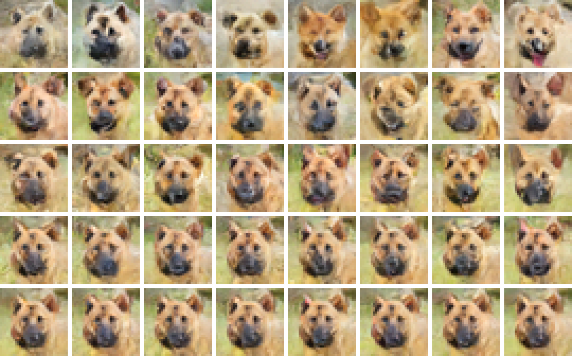
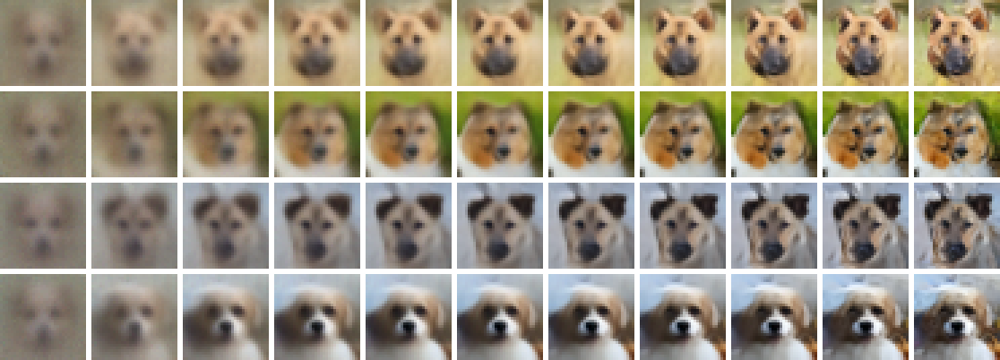
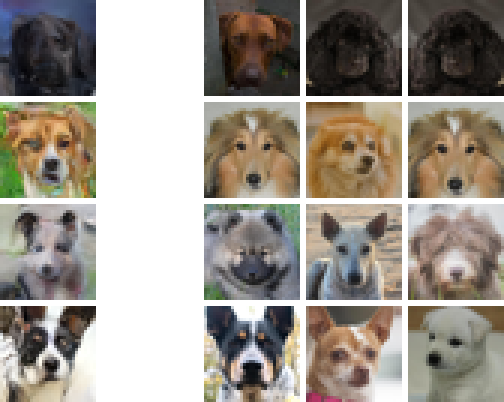
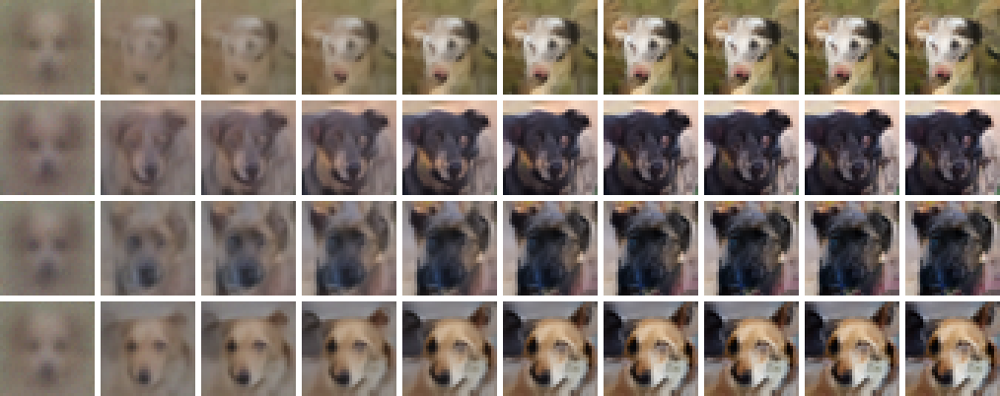

A 3.9M-parameter flow matching model, trained from scratch on 4,265 dog photos at 32×32 pixels, running in this page. It starts from Gaussian noise and follows a learned velocity field in small steps until it lands on a dog. Stop it at any step and re-roll the rest to see how much of the dog was already decided.
The left image is the sample at time t. At t = 0 it is pure noise and at t = 1 it is the finished dog. The right image is the model's guess, at that moment, of where the sample will end up. Drag the slider or click a frame to go back to any step.
Take the sample at the selected frame and finish it nine times, each time with different random noise. What the nine results share was already fixed at that frame. What differs was still open.
Re-roll from t = 0 and the nine dogs differ in color, breed and pose. From 0.4 it is the same dog every time, with small changes to the ears and markings. Past 0.6 the nine are hard to tell apart.
Measured on the trained model in PyTorch. The numbers and images come from analyze.py.
Stop a run at time t, finish it 8 times with fresh noise, and measure how much the 8 results still differ. Splitting each image into three spatial scales shows which parts were already fixed. The overall color and lighting (the image averaged over 8×8-pixel blocks) is half decided by t = 0.13. The layout, meaning where the head, ears and background sit, is half decided by 0.26. Fur and edges, the finest scale, not until 0.48. At t = 0.4, when the sample still looks mostly like noise, 12% of the color variation is left and 58% of the fine detail.

At t = 0 the sample is pure noise and carries no information about which photo it will become, so the best guess is the average of all of them. Over 256 noise images, the model's guess is 0.046 rms from the mean training photo. A typical training photo is 0.49 from that mean, ten times farther. This is why one Euler step gives a brown blur: one step jumps straight to the t = 0 guess. By t = 0.3 the guess already has one particular dog's face and background.

For 1,000 generated dogs I searched all 4,265 training photos and their mirror images for the closest one. I did the same for the 500 dog photos in AFHQ's validation set, which the model never saw. A model that copied would put its samples much closer to a training photo than new real photos are. Here the median distance is 0.38 for generated dogs and 0.39 for held-out photos. The closest of the 1,000 generated dogs is 0.25 from its nearest training photo, and 15 of the 500 held-out photos are closer than that.

The paths from noise to dog are close to straight. For a 500-step run, the straight-line distance from start to end is 97.6% of the length of the path it actually travels, and 96.0% for the least straight of 256 runs. A straight path is what lets a few large steps land in the right place. With 10 steps the result is 0.14 rms from the 500-step image, while two unrelated generated dogs are 0.67 apart. Below 5 steps the images blur toward the average dog. At 50 steps the difference is 0.03, too small to see.

The dog model took hours to train. The same method in two dimensions takes seconds, so it can train while you watch. Paint points on the square, or pick a shape. A small network (three layers of 64) learns to carry Gaussian noise onto your points with the same loss as the dog model, in a background thread in this page.
started left of center started right. Gray dots are your data. The loss can't reach zero: its floor is the part of z − x₀ that can't be predicted from xt.
Where the same 900 noise points end up, using the network as it was after that many training steps. Before training, the field is close to zero and nothing moves.
Take a photo z and a noise image ε of the same size, and blend them with a random weight t between 0 and 1:
The network uθ(xt, t) sees only the blend and the time, and is trained to output the direction from the noise to the photo, z − ε, with a squared-error loss. A given blend could have come from many different photos, so the best it can do is the average direction over all of them, weighted by how likely each one is. That average is a velocity field that carries the whole noise distribution onto the photo distribution (Lipman et al. 2023).
The network is the lab's U-Net widened to 64 base channels: three resolution levels (32, 16, 8, then 4×4 at the bottom), one residual block per level, GroupNorm, and a sinusoidal time embedding added to every block. 3.9M parameters. Trained for 30,000 steps at batch size 64 with AdamW (learning rate 3·10⁻⁴), horizontal flips, and an exponential moving average of the weights (0.999), on an M2 MacBook in about two hours. Final loss 0.205 on training photos and 0.219 on held-out ones.
Start from noise x0 and take Euler steps, x ← x + h·uθ(x, t). With noise σ above 0 the page uses an SDE instead. It adds Gaussian noise each step and a correction term that keeps the distribution at every t the same as the ODE's. The correction needs the score ∇log pt, and for this path the score follows from the velocity, so no second network is needed:
The noise level is σt = σ·√(1 − t). It fades out by the end, and it cancels the 1/(1 − t) above, so the drift becomes u + σ²/2·(t·u − x).
The velocity is the average of z − ε given the blend. Following it in a straight line for the remaining time 1 − t gives xt + (1 − t)·u, which works out to the average of z given the blend: the model's best guess of the final photo. The right-hand image in section 01 shows it.
The U-Net runs as hand-written WebGPU compute shaders: one for 3×3 convolutions, one for 1×1, one for GroupNorm with SiLU, one each for pooling and upsample-and-concatenate. Each thread computes 4 pixels for 8 output channels and reuses its input loads across them. Weights ship as 7.7 MB of fp16. Outputs match PyTorch to within 10⁻⁵. One step for one image takes about 15 ms on an M2, and a step for the nine re-rolls about 50 ms. Without WebGPU, a plain JavaScript version of the same network runs instead, much more slowly.
The 2-D network is a 3-layer MLP with hand-written backpropagation and Adam, trained in a Web Worker on batches of 128.
Finding 1. 48 ODE runs of 100 Euler steps. At t = 0, 0.1, …, 0.9 each run is copied 8 times and finished with the SDE at σ = 1. Each final image is split into three parts that add up to it: the 8×8 block average (color), the 2×2 block average minus the 8×8 one (layout), and the image minus the 2×2 average (detail). For each part: the variance across the 8 copies, averaged over pixels and runs, divided by its value for copies started at t = 0. That baseline is smaller than the variance between independent samples. At σ = 1, copies started from the same noise keep some of it in common and vary 31% as much as independent samples (20% for color).
Finding 2. The guess at t = 0 for 256 noise images, compared with the mean of the training photos.
Finding 3. 1,000 samples from 100-step ODE runs and the 500 dog photos in AFHQ's validation split, each compared with the 4,265 training photos plus mirrored copies, since training used random flips. Distance is the rms pixel difference with pixels in [−1, 1].
Finding 4. 256 starting noises, each sampled with N Euler steps and compared with a 500-step run from the same noise. Straightness is the distance from x0 to x1 divided by the summed length of the 500 steps.
pip install torch pillow numpy # AFHQ (Choi et al. 2020): put afhq/train/dog and afhq/val/dog here python train.py --iters 30000 # ~2 h on an M2, writes ckpt.pt python analyze.py # ~10 min, writes docs/data.json and docs/img/ python export_weights.py # writes docs/model.bin for the page cd docs && python -m http.server